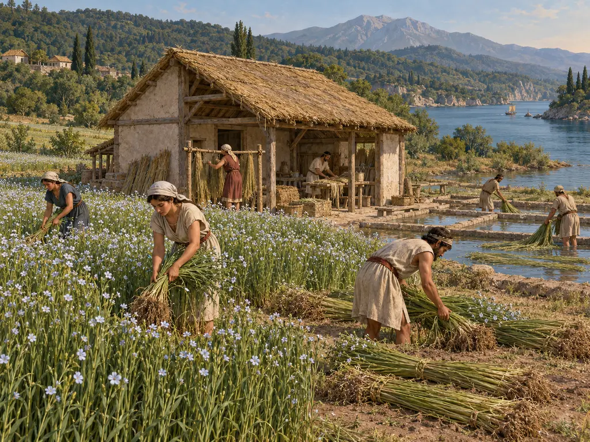
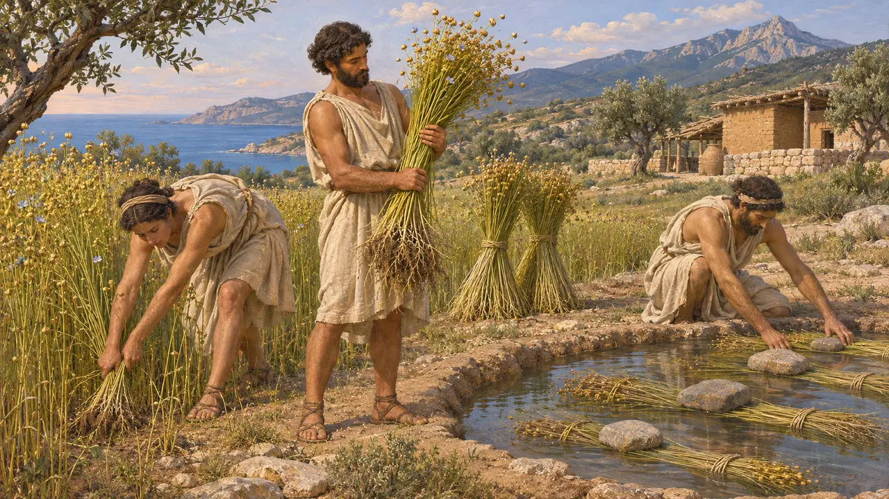
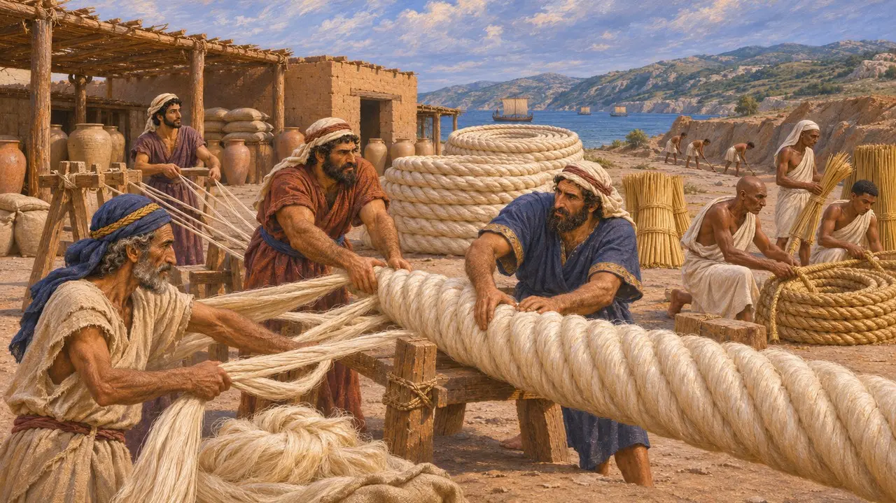
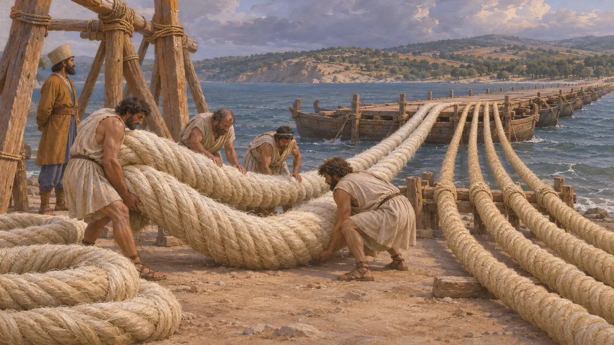
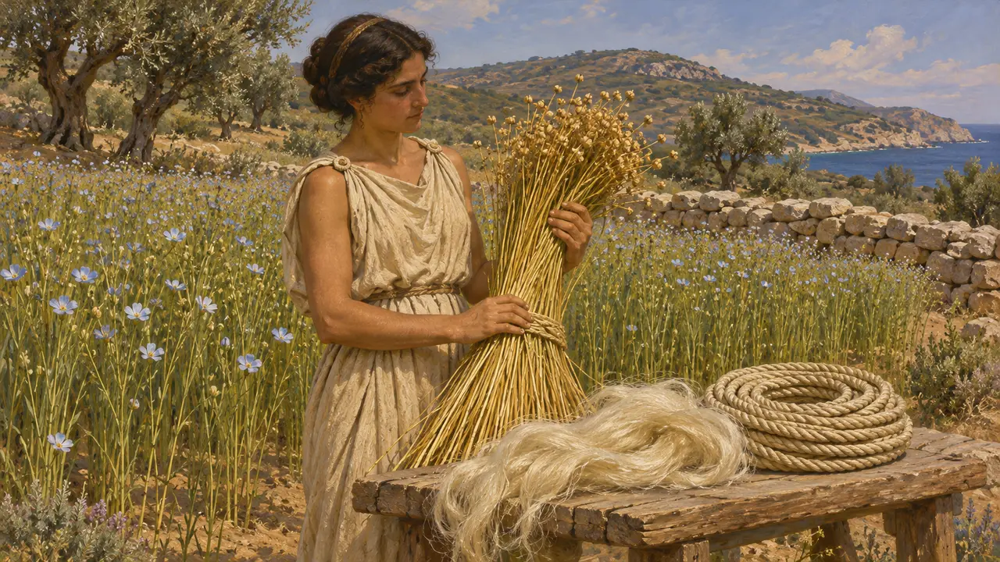

كان الكتّان النبات الليفي الرئيسي في حوض المتوسط والشرق الأدنى القديمين، ويُزرع لصناعة قماش الكتّان وأشرعة السفن والحبال. ويذكر هيرودوت أنه بينما كان خشايارشا يستعد للعبور إلى أوروبا، صُنعت حبال من «الكتّان الأبيض» والبردي لجسور الهلسبونت. وبفضل تلك الحبال يحتل الكتّان مكانه في قصة سنوات آثوس.
في اللعبة: تبني اللعبة حقول الكتّان في آثوس لتزويد مصنع الحبال فيها، وتصنّفها ضمن الطعام. والكتّان محصول ألياف، ويذكر هيرودوت أن الفينيقيين هم من صنعوا حبال الكتّان الأبيض؛ ولا توجد سجلات لحقول كتّان في آثوس.

محصول ليفي، يُقتلع ويُعطَّن
في السجلاتوصلتنا منسوجات الكتّان بأعداد كبيرة من مصر، وتُظهر رسوم مقابر الدولة الحديثة، وهي أقدم من خشايارشا بقرون، نباتَ الكتّان يُقتلع من جذوره ويُربط حزمًا. ثم كانت السيقان تُعطَّن، أي تُنقع في الماء أو تُترك على أرض رطبة حتى يُرخي التعفّن الألياف عن اللبّ الخشبي. ويلي ذلك الكسر والتنفيض والتمشيط قبل الغزل. وكان يمكن عصر بذور الكتّان لاستخراج الزيت، لكن النبات كان يُزرع قبل كل شيء من أجل أليافه.
E. J. W. Barber, Prehistoric Textiles, 1991

حبال لجسور الهلسبونت
رواية قديمةيقول هيرودوت إنه بينما كانت قناة آثوس تُحفر، أمر خشايارشا بإعداد حبال من البردي والكتّان الأبيض لمدّ جسر على الهلسبونت. وعهد بهذا العمل إلى الفينيقيين والمصريين، كما أمر بتخزين المؤن في مستودعات على امتداد الساحل التراقي. وحين بُني الجسران الأولان، استعمل الفينيقيون حبال الكتّان الأبيض واستعمل المصريون البردي. ففي روايته كانت هذه الصنعة لدى هذين الشعبين، لا لدى المزارعين قرب آثوس.
Herodotus 7.25; Herodotus 7.34

أثقل من البردي
رواية قديمةيذكر هيرودوت أنه بعد أن حطّمت عاصفة الجسور الأولى، جُهّز كل جسر من الجسور الجديدة بحبلين من الكتّان الأبيض وأربعة من البردي. ويقول إن الحبال كانت متماثلة في السُّمك والمظهر، غير أن حبال الكتّان كانت أثقل نسبيًا، ويروي أن الذراع الواحدة من حبل الكتّان كانت تزن وزنة.
Herodotus 7.36

ماذا كان «الكتّان الأبيض»
متنازع عليهتُترجم كلمة هيرودوت «ليوكولينون» عادةً بـ«الكتّان الأبيض»، لكن النبتة المقصودة غير مؤكدة. فكثيرون يرونها ضربًا من كتّان النسيج العادي. واقترح بعض الشرّاح ليفًا أخشن، كنبات الحلفاء، يلائم الحبال الثقيلة أكثر. كما تختلف الدراسات الحديثة للجسرين في كيفية صنع هذه الحبال وتثبيتها وشدّها عبر المضيق.
N. G. L. Hammond and L. J. Roseman, The construction of Xerxes' bridge over the Hellespont, Journal of Hellenic Studies 116, 1996
المصادر
- Herodotus 7.25
- Herodotus 7.34
- Herodotus 7.36
- N. G. L. Hammond and L. J. Roseman, The construction of Xerxes' bridge over the Hellespont, Journal of Hellenic Studies 116, 1996
- E. J. W. Barber, Prehistoric Textiles, 1991